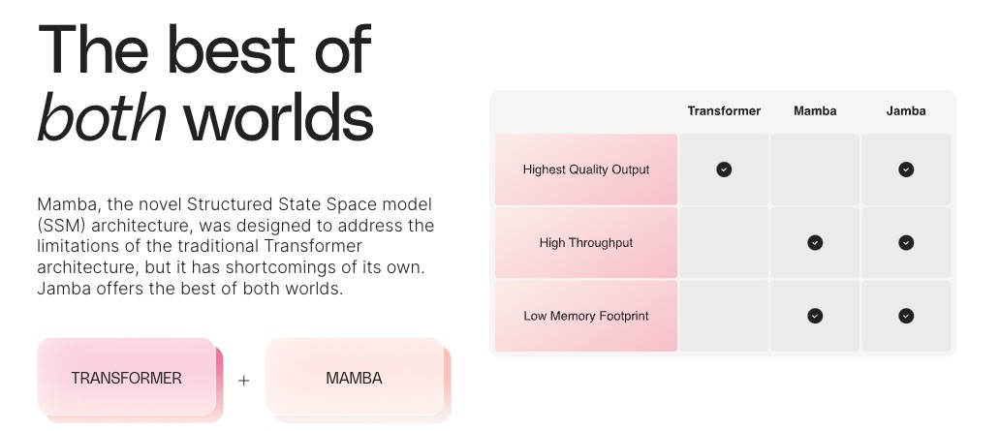
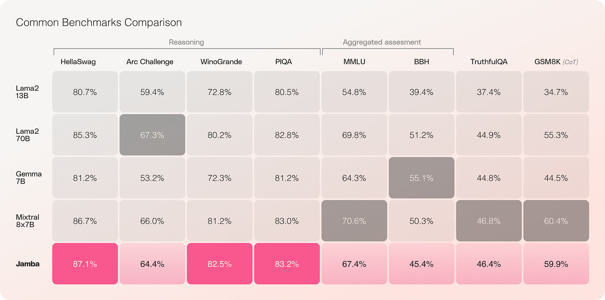
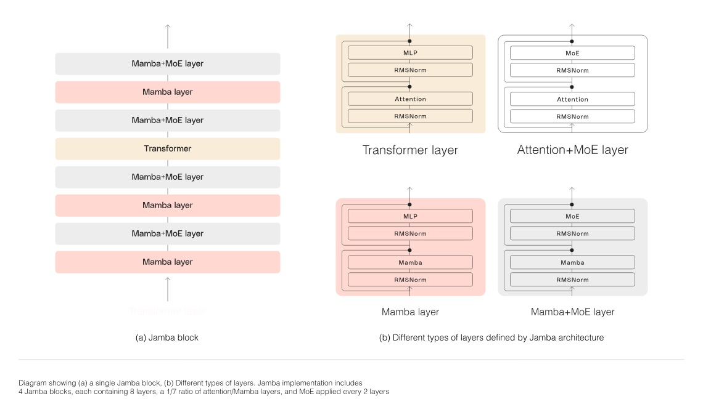
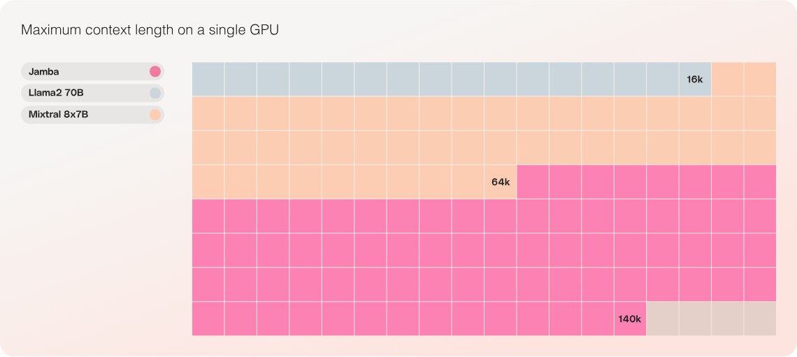
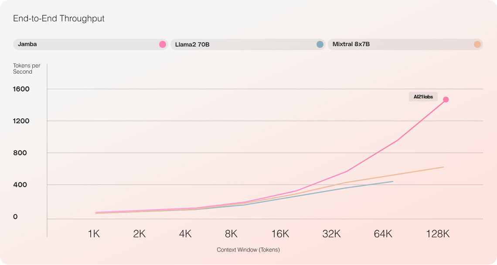

Week 1: Transformer 및 차세대 아키텍처#
1. Transformer 아키텍처의 기본 구조#
Transformer는 Self-Attention 메커니즘을 기반으로 한 모델로, 입력 문장을 인코더-디코더(encoder/decoder) 구조로 처리한다. 인코더는 입력 시퀀스를 인코딩하여 컨텍스트(Context)를 생성하고, 디코더는 이 컨텍스트를 참고해 출력 시퀀스를 생성한다. Self-Attention(자가 어텐션)은 한 토큰이 시퀀스 내 다른 모든 토큰과의 관계(유사도)를 계산하여 자기 자신의 표현을 조정하는 방법이다. 이를 통해 병렬 처리가 가능해져 RNN 기반 모델보다 학습이 빠르고, 긴 의존 관계도 효과적으로 학습할 수 있다. 다만 각 토큰 쌍마다 연산이 필요하여 Attention 연산 비용이 \(O(n^2)\)로 늘어나므로 시퀀스 길이가 길어질수록 비효율적이다. 특히 추론(inference) 시에는 토큰을 한 개씩 생성하면서 이전 모든 토큰과의 어텐션을 계산해야 하므로 시퀀스 길이 L에 대해 약 \(L^2\)에 비례하는 연산이 요구된다. 이로 인해 긴 문맥 처리 시 속도가 느려지고 메모리 사용량도 선형적으로 증가하여 큰 한계로 작용한다.
Transformer 전체 구조. 왼쪽은 인코더, 오른쪽은 디코더를 나타낸다. 각 인코더 블록은 Multi-Head Self-Attention과 피드포워드(FFN)로 구성되며, 디코더 블록은 여기에 마스킹된(masked) Self-Attention과 인코더-디코더 Attention(교차 어텐션)이 추가된다. 어텐션 모듈은 모든 이전 토큰들을 참조하여 현재 토큰의 컨텍스트를 형성한다. 트랜스포머는 순환구조가 없어 병렬화에 유리하고, 멀티-헤드 어텐션으로 다양한 표현 공간에서 패턴을 학습한다. 그러나 어텐션 연산의 쿼드러플릭(Quadratic) 복잡도 때문에 메모리와 계산량이 시퀀스 길이에 따라 급증하는 단점이 있다.
Self-Attention 연산 예시 코드#
아래 코드는 PyTorch를 사용하여 Self-Attention의 핵심 연산을 구현한 예시다 (단일 배치, 시퀀스 길이 L, 차원 d인 경우). 각 토큰의 쿼리 \(Q\), 키 \(K\), 밸류 \(V\) 벡터를 이용해 어텐션 가중치를 구한 뒤, 가중합으로 출력값을 계산한다:
import torch, math
L, d = 5, 64 # 시퀀스 길이 L=5, 임베딩 차원 d=64
# 예시 Q, K, V 행렬 (batch=1, seq_len=L, dim=d)
Q = torch.rand(1, L, d)
K = torch.rand(1, L, d)
V = torch.rand(1, L, d)
# 1. 어텐션 스코어 행렬 계산 (Q * K^T / sqrt(d))
scores = torch.matmul(Q, K.transpose(-2, -1)) / math.sqrt(d) # (1, L, L)
# 2. Softmax로 어텐션 가중치 확률 분포 얻기
attn_weights = torch.softmax(scores, dim=-1) # (1, L, L)
# 3. 가중치를 V에 곱하여 출력 계산
output = torch.matmul(attn_weights, V) # (1, L, d)
print(output.shape) # torch.Size([1, 5, 64])
코드 해설: 위 코드에서 scores는 각 토큰 i가 다른 토큰 j에 주의를 얼마나 기울이는지 나타내는 어텐션 점수 행렬이다. softmax를 통해 각 i에 대해 합이 1인 확률 분포로 정규화하면 attn_weights가 된다. 마지막으로 이 가중치를 각 j의 값 벡터 \(V_j\)에 곱해서 합산하면 각 위치 i에 대한 Self-Attention 출력이 계산된다.
체크포인트 질문#
Transformer에서 Self-Attention이 가지는 주요 장점은 무엇인가? 또한 추론 시 병목 현상은 어떤 부분에서 발생하는가?
Transformer 인코더-디코더 구조와 GPT 같은 디코더-Only 구조의 차이를 설명하라.
시퀀스 길이 L에 대해 Transformer의 시간 복잡도와 공간 복잡도는 각각 어떻게 스케일링되는가?
2. Mamba 아키텍처 – Selective State Space Model#
Mamba는 2024년에 제안된 새로운 시퀀스 모델로, Selective State Space Model (선택적 상태 공간 모델)을 활용하여 Transformer의 대안을 제시한다. Mamba의 핵심 아이디어는 연속시간 상태 공간 모델(SSM)을 언어 모델링에 적용하되, 입력에 따라 동적으로 상태 전이를 제어하는 것이다. 이를 통해 각 시점에 과거 정보를 선별적으로 유지하거나 잊도록 만들어, 토큰 간 내용 기반(content-based) 의존성을 표현한다.
Mamba는 순환신경망(RNN)처럼 동작하여 이전 hidden state(은닉 상태)를 갱신하면서 한 토큰씩 순차 처리하지만, 효율적인 알고리즘을 통해 병렬화 제약을 극복했다. 어텐션이나 거대한 MLP 피드포워드 층 없이도 토큰들 간 정보를 주고받을 수 있도록 선택적 스캔 알고리즘과 하드웨어 친화적인 병렬화 기법을 도입하여 긴 시퀀스도 선형 시간에 처리할 수 있게 최적화했다. 그 결과 Mamba는 추론 시 5배 이상 높은 토큰 처리량을 보이며, 시퀀스 길이에 선형적으로(scale linearly) 증가하는 성능을 달성했다. 실제로 Mamba-3B 모델은 동일 크기 Transformer보다 성능이 우수하고, 2배 큰 Transformer와 맞먹는 성능을 보였다고 보고되었다.
Mamba의 블록 구조는 Transformer의 블록과 유사하게 여러 층 적층 형태로 이루어져 있다. 다만 내부 구성은 다음과 같다:
입력 임베딩에 선형 확장(projection)을 적용해 차원을 늘린다.
토큰 간 독립 계산을 막기 위해 지역 컨볼루션(layer)을 통과시켜 인접 토큰 정보를 섞어준다.
그런 다음 Selective SSM 레이어가 적용되어, HiPPO 초기화된 상태 행렬 \(A\)를 기반으로 연속 상태 업데이트를 수행한다. 이 단계에서 선택적 상태 압축 알고리즘이 적용되어 중요한 정보는 유지하고 불필요한 정보는 잊게 된다.
마지막으로 정규화(norm)와 출력단 Softmax 등을 거쳐 토큰 출력이 산출된다.
이러한 구성으로 Mamba 블록은 Self-Attention을 대체하면서도 MLP와 유사한 국소 연산을 포함하여 토큰 내 계산(computation within token)도 수행한다. 여러 개의 Mamba 블록을 쌓으면 Transformer와 동일하게 딥한 시퀀스 모델을 구축할 수 있다. Mamba는 이처럼 어텐션 병목을 제거함으로써 사실상 무한대에 가까운 컨텍스트 길이도 실용적으로 다룰 수 있고, 학습 및 추론 속도 모두 크게 향상되었다.
참고: “Selective” SSM에서는 상태공간의 계수(상태 전이 행렬 등)가 토큰 값의 함수로 동적으로 결정된다. 이는 기존 고정 SSM의 한계를 극복해 이산 토큰 데이터(자연어)에도 높은 성능을 내도록 한 비결이다.
Mamba 구조 및 사용법 예시 코드#
Mamba는 현재 파이썬 패키지로 제공되어 손쉽게 활용할 수 있다. 아래는 mamba-ssm 라이브러리를 통해 Mamba 블록을 생성하고 텐서 입력을 처리하는 예시다:
import torch
# Mamba 패키지 임포트
from mamba_ssm import Mamba
batch, length, dim = 2, 64, 16 # 예시: 배치=2, 시퀀스=64, 차원=16
x = torch.randn(batch, length, dim).to("cuda") # 임의 입력 텐서 (GPU사용)
# Mamba 블록 모델 생성
model = Mamba(
d_model=dim, # 모델 차원 (임베딩 차원)
d_state=16, # SSM 상태 차원 (확장 정도)
d_conv=4, # 국소 컨볼루션 크기
expand=2 # 내부 채널 확장 비율
).to("cuda")
y = model(x) # Mamba 블록으로 입력 처리
print(y.shape) # 출력 텐서 크기 확인 (batch, length, dim 이어야 함)
위 코드에서 Mamba(…)로 하나의 Mamba 블록을 생성한다. 매개변수 d_model, d_state 등은 논문에서 제시된 권장 값을 사용하였다. model(x)를 호출하면 입력 x에 대해 선택적 상태 공간 연산이 수행되어 동일한 크기의 출력 y를 반환한다. (실제 언어 모델에서는 이러한 블록을 여러 층 쌓고, 출력에 LM 헤드(head)를 붙여 어휘 분포를 예측하게 된다.)
실습 팁: Mamba는 GPU에서 동작하도록 구현되어 있으므로, 위 예시처럼 .to(“cuda”)로 텐서와 모델을 옮겨야 성능을 제대로 활용할 수 있다. 또한 pip install mamba-ssm으로 패키지를 설치하고, NVIDIA CUDA 11.6 이상 환경이 필요하다.
체크포인트 질문#
Mamba가 Transformer 대비 갖는 가장 큰 장점은 무엇인가? Mamba는 어떻게 어텐션의 \(O(n^2)\) 병목을 피할 수 있었는지 설명하라.
Mamba의 Selective SSM에서 **”선택적”**인 동작은 무엇을 뜻하는가? 이로 인해 언어 모델에서 어떤 효과를 얻을 수 있었는가?
Mamba-3B 모델이 보여준 성능 관련 특징을 언급하라 (예: 동일 크기 Transformer와의 비교, 두배 크기 Transformer와의 비교 등).
3. RWKV 아키텍처 – RNN과 유사한 구조의 효율적 처리#
RWKV는 **RNN(Recurrent Neural Network)**과 Transformer의 장점을 결합한 혼합형 아키텍처다. 이름 RWKV는 네트워크의 4가지 주요 파라미터인 Receptance (R), Weight (W), Key (K), **Value (V)**에서 유래하였으며, 각각 과거 정보 수용 게이트, 지수적 시간 가중치, 키, 값 벡터의 역할을 한다. RWKV는 내부적으로 시간 축 처리와 채널(피드포워드) 처리를 교대로 수행하는 RNN 구조를 가지며, 각 단계에서 과거 상태를 지수 가중치로 감쇠시키며 Key/Value 정보를 누적하는 방식으로 동작한다. 이를 통해 어텐션과 유사한 효과를 내면서도 매 토큰 처리 비용을 선형으로 유지한다.
RWKV의 큰 특징 두 가지는 다음과 같다:
Transformer처럼 병렬 학습 가능: 기존 RNN은 순차적(Time-step)으로만 학습 가능하여 병렬화에 어려움이 있었으나, RWKV는 어텐션 형태의 수식으로 변환하여 학습 시 병렬화를 달성했다. 즉, 훈련 단계에서는 Transformer와 동일하게 전체 시퀀스를 한꺼번에 처리하고(특수한 선형 어텐션 형태를 사용), 추론 단계에서는 RNN처럼 토큰을 하나씩 생성한다. 이를 통해 훈련 효율과 추론 효율을 모두 얻었다.
무한에 가까운 컨텍스트: RWKV는 RNN 계열답게 하나의 고정된 은닉 상태로 문맥을 요약하며 계속 업데이트하므로, 이론적으로 문맥 길이의 제한이 없다. 새로운 토큰을 생성할 때 이전 토큰들의 정보를 거대한 KV캐시로 모두 보관할 필요 없이, 이전 스텝의 state만 유지하면 된다. 따라서 메모리 사용량이 입력 길이에 거의 영향받지 않고, 긴 문맥도 다룰 수 있다 (물론 실제로는 훈련 시 사용된 문맥 길이 이상에 대해 일반화 성능이 제한될 수 있다).
RWKV의 성능은 Transformer와 견줄 만큼 우수한 것으로 나타났다. 커뮤니티 주도로 공개된 RWKV 모델들은 최대 14억~14십억 파라미터 규모까지 개발되었고, 동일한 파라미터 규모의 GPT 계열 Transformer와 비슷한 언어모델 능력을 보였다. 특히 RWKV-14B 모델은 14B 파라미터 GPT와 유사한 척도 상 scaling law을 따르며 성능 향상을 보였고, 대규모(예: 175B)로 확장하는 연구도 진행되고 있다.
메시지(정보) 처리 방식의 효율성도 RWKV의 강점이다. 각 레이어는 자신만의 은닉 상태를 갖고 토큰 단위로 갱신되는데, Time-mix라는 구조를 통해 **지수적 이동평균(EMA)**으로 과거 키/값의 누적을 유지하고, Channel-mix를 통해 FFN과 유사한 비선형 변환을 적용한다. 이러한 구성 덕분에 이전 토큰들의 영향력이 멀리까지 전달되며(긴 의존성 처리), 불필요하게 오래 지속되지 않도록 자연스럽게 **감쇠(decay)**된다. 또한 RWKV는 어텐션과 달리 토큰 수가 증가해도 토큰당 계산량은 일정하므로, 컨텍스트 길이가 길어져도 처리 속도 저하가 완만하다.
알아두기: RWKV의 경우 학습 시에는 내부적으로 어텐션 형태로 동작하므로 \(O(n^2)\) 연산을 사용하지만 GPU 병렬화로 상쇄된다. 추론 시에는 실제 RNN처럼 \(O(n)\)로 한 토큰씩 처리한다. 따라서 아주 긴 문맥을 다룰 때 Transformer 대비 메모리 및 시간 면에서 큰 이점을 가진다.
RWKV 모델 사용 예시 코드#
RWKV는 Hugging Face transformers 라이브러리에 통합되어 있어, 기존 GPT 모델 다루듯 사용할 수 있다. 예를 들어 공개된 RWKV-4 169M 모델을 불러와 텍스트 생성을 해보자:
from transformers import AutoTokenizer, AutoModelForCausalLM
# 1. 토크나이저와 모델 불러오기
tokenizer = AutoTokenizer.from_pretrained("RWKV/rwkv-4-169m-pile")
model = AutoModelForCausalLM.from_pretrained("RWKV/rwkv-4-169m-pile")
# 2. 입력 프롬프트 정의
prompt = "Once upon a time, "
inputs = tokenizer(prompt, return_tensors="pt")
# 3. 텍스트 생성
outputs = model.generate(inputs["input_ids"], max_new_tokens=20)
generated_text = tokenizer.decode(outputs[0], skip_special_tokens=True)
print(generated_text)
위 코드는 “Once upon a time, “라는 프롬프트로 시작하는 텍스트를 RWKV 모델로 생성하는 예다. RWKV 계열은 모델 크기가 클 경우 GPU 메모리에 효율적이며, 필요에 따라 model.to(‘cuda’)로 옮겨서 사용할 수도 있다. RWKV는 Autoregressive LM이므로 generate 함수 사용법이 GPT와 동일하다. 다만 매우 긴 프롬프트를 처리할 때 Transformer 대비 메모리 사용량이 적고 속도가 빠른 것을 확인할 수 있다.
참고: RWKV는 커뮤니티 중심으로 발전한 오픈소스 LLM으로, 디스코드 등에서 활발히 개발되고 있다. 현재 RWKV-14B까지 공개되어 있으며, 고속 추론을 위한 rwkv.cpp 같은 경량화 구현도 나와 있다.
체크포인트 질문#
RWKV 아키텍처가 Transformer의 어떤 단점을 해결하기 위해 나왔는지 설명하라. 또한 Transformer와 RNN의 장점을 각각 어떤 방식으로 결합했는가?
RWKV의 추론 방식은 Transformer와 어떻게 다르며, 이로 인해 얻는 이점은 무엇인가 (힌트: KV 캐시 vs 은닉 상태)?
RWKV의 이름이 뜻하는 바는 무엇이며, Time-mix와 Channel-mix의 역할은 무엇인지 간략히 정리하라.
4. Jamba 아키텍처 – MoE 기반 Transformer+Mamba 하이브리드#
소개#

Jamba는 Joint Attention + Mamba의 줄임말로, Transformer와 Mamba를 결합하고 거기에 MoE (Mixture-of-Experts) 기술을 적용한 하이브리드 아키텍처다. 이 모델은 2024년 AI21 Labs에 의해 발표되었으며, 세계 최초의 상용 수준 하이브리드 SSM-Transformer 모델로 불린다. Jamba는 Mamba, 즉 새로운 구조의 SSM 아키텍처를 기반으로 한 첫 번째 생산 등급 모델로, 트랜스포머 아키텍처의 한계를 극복하려는 시도에서 출발했으나, Mamba만의 한계도 있었다. Jamba는 트랜스포머와 SSM의 장점을 모두 살려, 기존 모델들과 비교해 뛰어난 성능을 보여주는 동시에, 긴 문맥에서의 처리량을 3배 가까이 향상시키는 등 비용 효율성과 접근성을 우선시하는 모델이다.
주요 특징#

새로운 SSM-트랜스포머 하이브리드 아키텍처를 기반으로 구축된 최초의 프로덕션 수준의 맘바 기반 모델
Mixtral 8x7B 대비 긴 컨텍스트에서 3배의 처리량 제공
대규모 256K 컨텍스트 창에 대한 액세스의 대중화
단일 GPU에서 최대 140K 컨텍스트까지 지원하는 동급 유일 모델
Apache 2.0 라이선스로 모델 가중치를 공개한 공개 LLM (OpenLLM)
Hugging Face에서 사용 가능하며, NVIDIA API 카탈로그에도 곧 추가 예정
Jamba는 비슷한 크기의 다른 모델들과 비교했을 때, 더 뛰어나거나 비슷한 성능을 보인다. 추론(reasoning) 관련 벤치마크들에서 좋은 결과를 보이고 있다.
Jamba의 모델 구조#

Jamba는 SSM과 트랜스포머 아키텍처의 장점을 결합한 세계 최초의 프로덕션급의 Mamba 기반 모델이다. 이 하이브리드 구조는 트랜스포머의 강력한 언어 이해 능력과 SSM의 효율적인 메모리 관리 및 처리 속도를 모두 활용한다. 결과적으로, Jamba는 기존의 언어 모델들이 가지고 있던 메모리 사용량 증가와 처리 속도 저하 문제를 크게 개선한다.
대규모 컨텍스트 윈도우 및 비용-효율성#

Jamba는 256K의 컨텍스트 윈도우를 제공함으로써, 매우 긴 문서나 대화를 효율적으로 처리할 수 있다. 이는 AI 개발자들이 보다 복잡한 자연어 처리 작업을 수행할 수 있게 해주며, 기존 모델들이 다룰 수 없었던 긴 문맥의 이해에 기여한다.
MoE(Mixture of Experts) 활용#

Jamba는 MoE 레이어를 통해 추론 시 사용 가능한 52B 파라미터 중 단 12B만을 활용한다. 이로 인해 모델의 활성화 파라미터가 더 효율적으로 사용되며, 동일한 크기의 트랜스포머 전용 모델보다 더 나은 성능을 보인다.
Jamba 아키텍처의 주요 특징은 다음과 같다:
교대 구조의 블록: Jamba는 8개 층 중 1개는 Transformer (Attention), 나머지 7개는 Mamba로 구성되는 1:7 비율로 레이어들을 섞어 쌓는다. 예를 들어 32층짜리 모델이라면 그 중 4개 층에만 어텐션이 있고, 나머지 28개 층은 Mamba로 되어 있다. 이러한 블록 구조 다이어그램은 아래와 같다 (Transformer 또는 Mamba 레이어 + MLP로 한 블록을 형성):
[{Transformer Attention} + MLP] → [{Mamba SSM} + MLP] → [{Mamba SSM} + MLP] → … (이런 식으로 1개의 Attention 블록 후 7개의 Mamba 블록이 이어지는 패턴).
이 구조를 통해 글로벌한 내용 추출은 가끔 삽입된 어텐션 층이 담당하고, 나머지 대부분의 상호작용은 Mamba 층이 효율적으로 처리한다. 결과적으로 전체 메모리 footprint는 KV 캐시를 적게 사용하여 크게 줄고, 긴 문맥 처리시에도 소수의 어텐션만으로 충분한 성능을 내도록 설계되었다.
Mixture-of-Experts (전문가 혼합) 활용: Jamba는 Transformer의 MLP 부분 일부를 MoE로 교체하였다. 구체적으로는 매 2개 층마다 하나의 MoE 레이어를 넣고, 각 MoE 레이어에는 16개의 Expert MLP가 존재하며, 매 토큰마다 상위 2개의 Expert만 활성화(top-2 gating)된다. 이로써 **총 파라미터 수는 크게 증가(52B)**하지만, 실제 추론 시 활성화되는 파라미터는 12B 수준으로 제한된다. 즉, **모델 용량(capacity)**은 키우면서도 계산비용은 억제하는 효과를 낸다. (Jamba 7B 기본 모델이 MoE를 통해 활성 12B / 전체 52B인 것이 그 예다.)
긴 문맥과 높은 효율: Jamba는 256K 토큰이라는 매우 긴 컨텍스트 윈도우를 지원한다. 이는 Transformers 기반 공개 모델 중 가장 긴 수준이며, 실제로 128K 토큰 입력을 8-bit 압축으로 단일 80GB GPU에서 처리 가능한 것으로 보고되었다. 동등한 크기의 일반 Transformer(Mixtral-8×7B 등)는 이러한 긴 문맥을 단일 GPU에 올릴 수 없기 때문에, 메모리 면에서 2배 이상의 이득을 보인다. 또한 긴 문맥에서의 토큰 처리 속도(throughput)가 매우 높아, 128K 토큰 입력 기준으로 동일급 Transformer 대비 3배 이상 빠른 생성 속도를 달성했다. 이는 긴 입력을 처리할 때 어텐션 연산이 일부 층에서만 일어나므로 전체 부담이 적기 때문이다. Jamba는 이러한 효율 향상을 이루면서도, 성능은 Mixtral-8x7B (활성 39B)나 Llama2-70B와 견줄만한 수준을 유지한다.
요약하면, Jamba는 Transformer의 일부를 Mamba로 치환하고, 모델 용량은 MoE로 늘린 독창적인 구조다. 이로써 메모리 사용량과 추론 속도를 극적으로 개선하여 대용량 LLM을 보다 실제 애플리케이션에 적합하게 만들었다. Jamba는 출시와 함께 오픈 소스로 가중치를 공개(Apache 2.0)하여, 연구자들이 추가 튜닝 및 개선을 이어갈 수 있도록 하였다.
비교: 선행 연구로 Mamba와 어텐션을 결합한 작은 하이브리드 모델 시도가 있었으나(예: H3, Hyena 등), Jamba처럼 수십억 파라미터 규모로 확장하고 MoE까지 통합한 것은 처음이다. 또한 Jamba는 실제 제품화 수준의 안정된 성능을 보여주는 첫 사례로 평가된다.
사용 방법#
Jamba 모델을 사용하기 위해서는 Hugging Face의 transformers 라이브러리가 필요하다. 다음은 Python을 사용하여 Jamba 모델을 불러오고, 간단한 텍스트 생성을 수행하는 예시 코드다. 이 코드를 실행하기 전에, transformers 라이브러리와 함께 mamba-ssm, causal-conv1d 라이브러리를 설치해야 한다. 이는 Jamba의 최적화된 Mamba 구현을 사용하기 위함이다.
Jamba 모델 활용 예시 코드#
Jamba는 AI21 Labs에서 공개한 모델로, Hugging Face Hub에도 체크포인트가 올라와 있다. transformers 라이브러리를 통해 다음과 같이 사용할 수 있다:
from transformers import AutoTokenizer, AutoModelForCausalLM
# Jamba v0.1 모델 로드 (HF 모델 카드: ai21labs/Jamba-v0.1)
tokenizer = AutoTokenizer.from_pretrained("ai21labs/Jamba-v0.1")
model = AutoModelForCausalLM.from_pretrained("ai21labs/Jamba-v0.1", trust_remote_code=True)
prompt = "AI 시대의 새로운 언어 모델 구조는"
inputs = tokenizer(prompt, return_tensors="pt")
outputs = model.generate(**inputs, max_new_tokens=50)
print(tokenizer.decode(outputs[0], skip_special_tokens=True))
위 코드에서 trust_remote_code=True 옵션은, Jamba의 커스텀 모델 구조를 불러오기 위해 필요할 수 있다 (AI21이 제공한 모델 정의를 신뢰하여 로드). Jamba 모델을 GPU에서 사용하려면 .to(‘cuda’) 호출로 옮겨야 하며, 7B 기반이라 하더라도 전체 52B 파라미터를 포함하므로 로딩 시 메모리 요구사항을 고려해야 한다.
Jamba의 컨텍스트 윈도우는 기본 256K로 설정되어 있지만, model.config.max_position_embeddings 등을 통해 현재 지원 컨텍스트를 확인할 수 있다. 긴 문맥 사용 시에도 Jamba는 적은 메모리로 빠른 추론이 가능하므로, 실제로 100K 토큰 이상의 장문 문서를 질의응답하거나 요약하는 등의 실험에 적합하다.
체크포인트 질문#
Jamba 아키텍처에서 Transformer 층과 Mamba 층은 어떤 비율로 배치되는가? 이러한 설계가 메모리 및 속도 측면에 어떤 이점을 주는지 설명하라.
Jamba가 MoE를 도입한 이유는 무엇인가? 활성 파라미터와 총 파라미터의 개념을 들어 설명하라.
Jamba 모델이 지원하는 최대 컨텍스트 길이는 얼마이며, 이것이 실용적으로 어떤 의미를 가지는지 (예: 적용 사례) 생각해보라.
5. 아키텍처별 성능 비교#
앞서 살펴본 Transformer, Mamba, RWKV, Jamba의 특성과 성능을 주요 지표별로 비교하면 다음과 같다:
아키텍처 |
지원 컨텍스트 길이 |
시간 복잡도 (추론 시) |
추론 속도(throughput) |
파라미터 효율성 |
메모리 사용 특징 |
|---|---|---|---|---|---|
Transformer (기존) |
보통 2K~4K (확장형은 최대 32K+) |
\(O(n^2)\) (토큰 쌍 모두 연산) |
기준 1× (동일 크기 대비) |
- (성능 ~ 파라미터 수 비례) |
KV캐시 메모리 O(n) (문맥 길이에 비례) |
Mamba (SSM) |
이론상 무제한 (실험서 1M 토큰) |
\(O(n)\) (선형 시간) |
Transformer 대비 ~5× 빠름 |
높음: 3B로 6B Transformer 성능 |
상태만 유지, 메모리 O(1) per token (토큰 길이에 영향 적음) |
RWKV (RNN) |
사실상 매우 김 (훈련 한계 내) |
\(O(n)\) (선형) |
Transformer보다 빠름 (유사 SSM계) |
높음: 14B로 GPT 13B급 성능 |
은닉 상태만 유지, 메모리 매우 효율적 |
Jamba (Hybrid) |
최대 256K |
혼합: 일부 \(O(n^2)\) (4개층) + 다수 \(O(n)\) |
긴 문맥에서 ~3× 빠름 (vs Mixtral) |
높음: 활성 12B / 총 52B |
KV캐시 일부만 사용 -> 메모리 절약 |
비교 해설: Transformer는 병렬 학습에 유리하나, 컨텍스트 길이가 늘어날수록 추론 시간이 선형 증가하고 메모리 사용이 커진다. Mamba와 RWKV는 순차 처리 방식이지만 각각 선택적 상태공간, RNN 공식으로 구현되어 추론 복잡도가 선형이며, 맥락을 요약하여 들고 다니므로 긴 입력에도 일관된 속도를 낸다. 특히 Mamba는 하드웨어 친화 최적화 덕에 작은 모델에서도 Transformers 대비 5배 이상 토큰 처리 속도를 보였다. RWKV도 유사하게 맥락 길이에 민감하지 않은 성능을 보여 고속/저메모리 추론이 가능하다.
Jamba는 하이브리드 구조로, 동일 조건에서 Transformer 대비 메모리 1/2, 속도 3배 이상의 이점을 보인다. 이는 대부분의 층이 Mamba이기에 가능한 것으로, 일부 어텐션 층만으로도 충분한 성능을 확보하면서 불필요한 계산을 줄였기 때문이다. MoE 적용으로 파라미터 효율도 높아져, 활성 파라미터 기준으로 보면 Transformer보다 적은 연산으로도 비슷한 성능을 낸다.
결과적으로, 메모리 여건이나 실시간 처리가 중요한 응용(예: 장문 입력, 제한된 GPU 메모리 환경)에서는 Mamba, RWKV, Jamba 같은 대안이 Transformer를 대체하거나 보완할 수 있다. 반면 최고의 정밀도가 요구되는 경우 아직까지는 Transformer 계열이 유리하나, Jamba 등의 성공으로 이러한 격차도 빠르게 좁혀지고 있다.
6. 최신 오픈소스 LLM 소개 및 특징#
이제 앞서 언급된 아키텍처들이 적용되거나 영감을 준, 최신 공개 대형 언어모델(LLM) 몇 가지를 살펴보자. 여기서는 Llama 3, Mixtral 8×7B, Qwen2-72B 세 가지를 소개하고, 각 모델의 구조적 특징과 산업 적용 사례를 간략히 설명한다.
Llama 3#
Meta AI의 Llama 3는 2024년 공개된 Llama 시리즈의 최신 버전으로, 8B, 70B, 그리고 초거대 405B 파라미터 모델로 구성된 **모델 군(family)**이다. Llama2 대비 더 방대한 데이터로 학습되었고(특히 405B 모델은 15.6조 토큰, Llama2-70B의 50배 데이터), 128K 토큰에 이르는 긴 문맥을 다룰 수 있도록 설계되었다. 긴 문맥 지원을 위해 8K 문맥으로 먼저 프리트레인 한 후 점진적으로 문맥 길이를 늘리는 방식을 채택했으며, 총 6단계에 걸쳐 8000억 토큰을 추가 학습하여 128K까지 확장했다. 이러한 컨텍스트 윈도우 확장 기법은 모델이 긴 입력에서도 안정적으로 추론하도록 돕는다.
Llama 3의 모델 구조 자체는 기본적으로 표준 Transformer 데코더다. Llama2와 마찬가지로 GPT 스타일의 Decoder-Only 구조를 사용하고, 활성화 함수로 SwiGLU, RoPE 위치임베딩 등의 기술이 적용되었다 (Llama2의 개선사항들이 계승). 성능 향상은 주로 데이터 품질 개선과 학습 스케일 증가에서 얻었으며, Llama 3.1(개량 버전)을 통해 멀티링구얼(다중언어) 지원과 툴 사용 능력까지 강화했다. 특히 405B 모델은 공개된 것 중 최대 규모의 오픈 LLM으로, 수백개의 GPU를 동원해 54일간 학습되었을 정도로 막대한 리소스가 투입되었다.
Llama 3는 공개 이후 다양한 분야에 활용되고 있다. 예를 들어 고객센터 챗봇, 전문 지식 질의응답 등에 Llama2를 대체하여 쓰이고 있으며, 70B 모델은 상용 수준의 성능으로 언어이해/생성 작업에 쓰인다. 토크나이저는 SentencePiece BPE를 사용하며, Llama2와 호환되어 기존 모델 자산(프롬프트, 토크나이저)을 이어서 활용하기에도 좋다. Hugging Face에서도 meta-llama/Meta-Llama-3-8B 등의 리포지토리로 공개되어 있어 쉽게 로드하여 사용할 수 있다.
요약: Llama 3는 대규모 데이터와 긴 문맥 학습을 통해 성능을 극대화한 차세대 LLM이다. 구조적으로 혁신적 변화는 없지만, 모델 크기/데이터의 스케일 업으로 얻은 탁월한 성능이 강점이며, 멀티링구얼/툴 사용 등 실용적 기능이 추가되었다.
Mixtral 8×7B#
Mixtral 8×7B는 Mistral AI에서 2024년 발표한 Sparse Mixture-of-Experts (SMoE) 모델로, Mistral 7B 모델의 각 MLP 층을 8개의 Expert로 확장한 버전이다. 이름의 의미는 “8명의 7B 전문가를 혼합” 한 모델로 이해할 수 있다. Mixtral-8×7B의 전체 파라미터 수는 약 46.7B로 늘어나지만 (7B 모델 대비 약 6.7배), 추론 시에는 토큰마다 39B 정도의 파라미터만 활성화되어 연산된다. 다시 말해, 한 토큰이 8개의 expert 중 상위 2개만 사용하도록 (Top-2) 게이팅하였기 때문에, 실제 계산량은 14B급 모델 수준으로 유지하면서 모델 용량은 46B급 성능을 낼 수 있게 한 것이다.
Mixtral의 결과, 성능은 기존 7B 모델을 크게 상회한다. 논문 보고에 따르면 Llama2-70B를 대부분의 벤치마크에서 능가하는 수준이며, OpenAI GPT3.5급과도 맞먹는 영역이 있다. 예를 들어, MMLU 등 학습되지 않은 지식 테스트에서 7B치고 뛰어난 성적을 기록했다. 이러한 효율은 MoE의 장점인 “전문가 분업” 덕분에, 각 expert가 서브태스크에 특화된 표현을 학습하고, 필요한 때만 동원되기 때문이다.
Mixtral 8×7B의 활용 예시로는, 오픈소스 챗봇이나 임베딩 생성기 등이 있다. 한 예로 FriendliAI에서는 Mixtral-8×7B를 실시간 서비스에 투입하여, 동일 하드웨어에서 더 빠른 응답 시간과 높은 처리량을 달성했다고 보고했다. 또한 MLPerf Inference 벤치마크에 Mixtral이 등장하여, MoE 모델의 효율성을 입증하기도 했다.
Mixtral 모델은 Hugging Face에 공개되어 있으며, 다음과 같이 사용할 수 있다:
from transformers import AutoModelForCausalLM, AutoTokenizer
tokenizer = AutoTokenizer.from_pretrained("mistralai/Mixtral-8x7B-v0.1")
model = AutoModelForCausalLM.from_pretrained("mistralai/Mixtral-8x7B-v0.1", device_map="auto")
# 모델 로드시 device_map이나 load_in_4bit 등의 옵션으로 메모리 최적화 가능
참고: Mixtral은 현재 transformers 라이브러리에서 완전 지원되지는 않아서, 위 예시처럼 불러오면 내부적으로는 MoE 구조가 일반 Linear로 풀려 로드된다. 추론 효율을 극대화하려면 vLLM이나 FlexGen과 같은 MoE 최적화 엔진을 사용하는 것이 권장된다. Hugging Face 모델 카드에서는 half-precision, bitsandbytes(4bit 양자화), FlashAttention 2 등 메모리 절감 세팅도 안내하고 있으니 참고하라.
Qwen2-72B#
Qwen2-72B는 **알리바바(Alibaba)**에서 공개한 차세대 거대 모델로, 다국어 및 멀티모달 지원에 초점을 맞춘 72억×10^8^ 파라미터 (약 727억) 규모의 LLM이다. Qwen 시리즈는 원래 중국어/영어에 강점이 있는 모델로 알려져 있는데, Qwen2에서는 27개 이상의 추가 언어 데이터로 학습하여 글로벌한 언어 능력을 확보했다. 또한 프로그래밍 코드와 수학 문제 해결 능력이 크게 강화되어, 다양한 벤치마크에서 동급 최고 수준을 달성했다.
Qwen2-72B의 아키텍처는 Transformer Decoder 기반이며, 활성화 함수로 SwiGLU, Attention QKV bias, 그리고 Grouped Query Attention (GQA) 기법 등을 적용한 점이 특징이다. GQA는 대규모 모델의 속도를 높이기 위해 어텐션 헤드를 그룹으로 묶어 계산하는 방법으로, Qwen2에서는 모든 모델에 GQA를 도입해 추론 메모리와 속도를 최적화했다. 이와 함께 임베딩 층과 출력층 가중치를 공유하는 Embedding Tying 등 파라미터 효율을 높이는 기법도 사용되었다.
멀티모달 지원이 Qwen2의 큰 강점이다. Qwen2-VL-72B라는 변형 모델은 이미지-텍스트-비디오를 모두 입력받아 이해할 수 있는 모델로, **Multimodal-ROPE (M-ROPE)**라는 다차원 위치 임베딩을 도입했다. M-ROPE는 1D 위치정보(텍스트 시퀀스), 2D 위치정보(이미지의 위치), 3D 위치정보(비디오의 시간 프레임까지)를 하나의 통합된 위치 임베딩으로 처리해, Qwen2-VL이 긴 동영상(20분 이상 분량)까지 이해하도록 한다. 실제로 Qwen2.5-VL (개선 버전)은 복잡한 영상 질의응답, OCR 등에서 GPT-4와 견줄만한 성능을 시현하여 주목받았다.
성능 측면에서 Qwen2-72B는 공개 모델 중 최상위권에 속한다. 내부 평가 결과, 많은 언어이해 벤치마크에서 이전 세대인 Qwen-14B나 경쟁 모델들을 앞섰고, 코드 생성 관련 HumanEval 등에서도 64.6% 통과율로 공개모델 최고 수준을 기록했다. 또한 중국어 등 비영어권 평가에서도 높은 점수를 받아, 산업적 활용 가치가 높다.
활용 예시: Qwen2-72B는 알리바바 클라우드 등을 통해 API로 제공되며, 기업들이 자사 검색엔진, 전자상거래 Q&A 등에 다국어로 활용하고 있다. 오픈소스로 가중치가 공개되어 HuggingFace Qwen/Qwen2-72B 경로로 다운로드 가능하며, Transformers 4.37.0 이상에서 바로 로드하여 사용할 수 있다. 다만 72B 모델은 크기가 크므로 GPU 메모리 4~8장 이상이 필요하다. 멀티모달 모델인 Qwen2-VL-72B는 별도 체크포인트로 제공되며, VisionEncoder를 포함한 처리로직이 통합되어 있어 이미지+텍스트 입력 형식으로 사용할 수 있다 (예: processor = QwenImageProcessor(); model = QwenVLModel.from_pretrained(…) 형태).
정리: Qwen2-72B는 기업 수준의 멀티모달 AI를 지향한 모델로, 광범위한 언어 지원, 강화된 추론 성능, 멀티모달 처리를 위한 구조적 개선(M-ROPE, GQA 등)을 통해 현존 최고 공개 모델 중 하나로 평가된다. 산업 현장에서는 다국어 고객지원 봇, 실시간 영상 분석 등 다양한 분야에 적용 가능성을 보여주고 있다.
7. 실습 지침#
마지막으로, 위에서 소개한 개념들과 모델들을 직접 다뤄볼 수 있는 실습 가이드를 제시한다. 아래 단계에 따라 환경을 구축하고, Transformer와 Mamba 모델의 속도 비교 실험까지 수행하라.
Conda 가상환경 구성: 실습을 위해 Anaconda 혹은 Miniconda를 사용해 새로운 파이썬 가상환경을 만든다. 터미널에서 다음을 실행하라:
conda create -n llm_env python=3.10 -y conda activate llm_env
이렇게 하면 Python 3.10 기반의 llm_env 환경이 생성 및 활성화된다.
PyTorch 및 Hugging Face Transformers 설치: PyTorch 프레임워크와 트랜스포머 라이브러리를 설치한다. CUDA 지원 GPU가 있다면 해당 버전에 맞는 PyTorch를 선택하라 (여기서는 예시로 CPU 버전 설치):
pip install torch torchvision torchaudio # PyTorch 설치 pip install transformers[torch] # Hugging Face Transformers 설치
설치 과정에서 버전에 유의하라. 예를 들어 CUDA 11 이상이 설치된 경우 pip install torch==2.0.1+cu118 등의 명령을 사용할 수도 있다. 설치가 끝났으면 python -c “import torch; import transformers; print(‘OK’)” 등으로 잘 설치됐는지 확인한다.
Mamba 설치 및 사용법: Mamba 아키텍처 실험을 위해 mamba-ssm 패키지를 설치한다. 해당 패키지는 선택적으로 GPU 상의 연산 최적화를 포함하므로, Linux/NVIDIA 환경이 필요하다. 설치 명령:
pip install mamba-ssm[causal-conv1d] # (선택적으로 conv1d 가속 포함)
설치 후, 간단한 예제로 Mamba 블록을 실행해보자:
import torch from mamba_ssm import Mamba mamba_block = Mamba(d_model=32, d_state=64, d_conv=4, expand=2).eval() # 32차원 모델 x = torch.randn(1, 10, 32) # 시퀀스 길이 10의 임의 입력 with torch.no_grad(): y = mamba_block(x) print(y.shape) # (1, 10, 32) 출력
이 코드로 Mamba 블록이 정상 동작하는지 간단히 확인해볼 수 있다.
Transformer vs Mamba 추론 시간 비교 실험: 동일한 입력에 대해 Transformer 모델과 Mamba 모델이 응답을 생성하는 속도를 비교해보자. 여기서는 간단히 GPT-2 (Transformer, 1.5억 파라미터급)와 앞서 만든 소형 Mamba 블록으로 성능을 비교한다. 실제론 동등한 파라미터 규모의 모델이 필요하지만, 개념 증명을 위해 작은 예시로 시연한다. 아래 코드를 실행하라:
import time import torch from transformers import AutoTokenizer, AutoModelForCausalLM from mamba_ssm import Mamba # 1. 프롬프트 설정 prompt = "인공지능이란 무엇인가?" # 2. Transformer 모델 (GPT-2 small) 로드 tokenizer = AutoTokenizer.from_pretrained("gpt2") transformer_model = AutoModelForCausalLM.from_pretrained("gpt2").eval() # 3. 프롬프트 토크나이징 및 추론 (Transformer) inputs = tokenizer(prompt, return_tensors="pt") start_time = time.time() with torch.no_grad(): output_ids = transformer_model.generate(**inputs, max_new_tokens=50) end_time = time.time() transformer_time = end_time - start_time print("Transformer 출력:", tokenizer.decode(output_ids[0], skip_special_tokens=True)) print(f"Transformer 추론 시간: {transformer_time:.3f}초") # 4. Mamba 모델 생성 (동일 hidden size로) d_model = transformer_model.config.hidden_size # GPT2 hidden size (768) mamba_model = Mamba(d_model=d_model, d_state=64, d_conv=4, expand=2).eval() # Mamba는 학습된 언어모델이 아니므로 임의 가중치 상태. 여기서는 속도 비교만 수행. x = torch.randn(1, 50, d_model) # GPT2가 생성한 50개 토큰에 해당하는 임의 텐서 start_time = time.time() with torch.no_grad(): _ = mamba_model(x) # Mamba 블록으로 50토큰 처리 end_time = time.time() mamba_time = end_time - start_time print(f"Mamba 50토큰 처리 시간: {mamba_time:.3f}초") # 5. 결과 비교 speedup = transformer_time / mamba_time if mamba_time > 0 else float('inf') print(f"추론 속도 비교: Mamba 블록이 Transformer 대비 약 {speedup:.1f}배 빠르다.")
이 코드는 ① GPT-2로 50개 신규 토큰을 생성하는 시간과 ② Mamba 블록이 50토큰을 순차 처리하는 시간을 측정한다. 마지막에 두 값을 비교하여 Mamba의 추론 속도가 얼마나 빠른지 출력한다. 예시 환경에서는 Mamba 블록이 경량 모델이므로 Transformer보다 수 배 이상 빠르게 나타날 것이다.
주의: 여기서는 Mamba를 학습된 LM으로 사용하는 것이 아니므로, 실제 생성 텍스트 비교는 불가능하다. 대신 동일 길이의 토큰을 처리하는 연산량 비교에 중점을 둔 것이다. 더 정확한 비교를 위해서는 Mamba로 사전학습한 언어모델(Mamba-3B 등)과 동일 규모의 Transformer를 비교해야 한다. 해당 모델들을 확보했다면 동일한 프롬프트로 generate를 호출하고 time.time()으로 걸린 시간을 측정해보는 식으로 실험해볼 수 있다.
응용 및 확장:
여러 모델 테스트: 위에서 다룬 Llama3, Mixtral, Qwen2 등 모델들도 Hugging Face 경로나 공식 배포 경로를 통해 로드하여 generate 실습을 해볼 수 있다. 예를 들어 Llama3-70B 모델의 경우 meta-llama/Meta-Llama-3-70B를 AutoModelForCausalLM으로 불러올 수 있다 (단, 큰 모델은 하드웨어 요구량에 유의).
긴 문맥 실험: Jamba나 Mamba 같은 모델의 긴 문맥 능력을 시험해보고자 한다면, 예를 들어 임의의 긴 더미 텍스트(예: 10만 토큰)를 프롬프트로 주고 정상 출력이 나오는지, 메모리 사용량은 어떤지를 관찰해볼 수 있다.
프로파일링: 파이썬의 profile 모듈이나 PyTorch의 프로파일러를 사용하면 각 모델의 레이어별 연산 시간을 측정해볼 수 있다. 이를 통해 Mamba가 어디서 시간을 절약하는지, Transformer는 어떤 연산에 시간이 많이 드는지 더 깊이 분석 가능하다.
참고자료#
주요 논문 및 연구 자료#
Vaswani, A., et al. (2017). “Attention is all you need.” Advances in neural information processing systems.
Gu, A., & Dao, T. (2023). “Mamba: Linear-Time Sequence Modeling with Selective State Spaces.” arXiv preprint.
Peng, B., et al. (2023). “RWKV: Reinventing RNNs for the Transformer Era.” arXiv preprint.
Lieber, O., et al. (2024). “Jamba: A Hybrid Transformer-Mamba Language Model.” arXiv preprint.
Meta AI (2024). “Llama 3: Technical Report.” Meta Research.
기술 문서 및 구현체#
Hugging Face Transformers Documentation: https://huggingface.co/docs/transformers
Mamba GitHub Repository: state-spaces/mamba
RWKV Wiki: https://wiki.rwkv.com
AI21 Labs Jamba Documentation
Mistral AI Mixtral Technical Documentation
Alibaba Qwen2 Model Card and Documentation
온라인 리소스 및 블로그#
“A Visual Guide to Mamba and State Space Models” - Newsletter by Maarten Grootendorst
“The RWKV language model: An RNN with the advantages of a transformer” - The Good Minima
“Mamba Explained” - The Gradient
“Introducing RWKV - An RNN with the advantages of a transformer” - Hugging Face Blog
“Introducing Jamba: AI21’s Groundbreaking SSM-Transformer Model” - AI21 Blog
“Takeaways From the Llama 3 Release Paper” - Medium/ailia-ai
“Qwen2 — Alibaba’s New Powerhouse Multimodal AI” - Research Graph Hub
벤치마크 및 평가 자료#
MLCommons MLPerf Inference Benchmark Results
“Serving Performances of Mixtral 8x7B” - FriendliAI Blog
OpenAI Model Comparison Studies
Various model cards on Hugging Face Model Hub